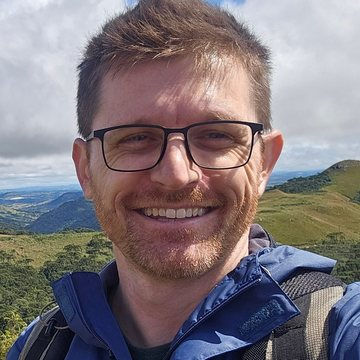

Botânica, coleções e florestas de Santa Catarina
Grupo de pesquisa coordenado pelo Prof. André Luís de Gasper na Universidade Regional de Blumenau. O Herbário Dr. Roberto Miguel Klein é a nossa coleção e o nosso laboratório: aqui estudantes e pesquisadores trabalham com sistemática de licófitas e samambaias, ecologia de florestas tropicais e coleções biológicas.

Trabalhamos da coleta no campo à análise de dados, sempre com estudantes de iniciação científica, mestrado, doutorado e pós-doutorado.
Taxonomia integrativa, filogenia, evolução e biogeografia de licófitas e samambaias, com dados moleculares, morfologia de esporos, citometria de fluxo e cariologia.
Estrutura, dinâmica e mortalidade das florestas, distribuição de espécies, padrões de diversidade e efeitos das mudanças climáticas, com os dados do FlorestaSC, que o grupo coordena.
Curadoria, digitalização e uso dos dados de herbários brasileiros, incluindo o próprio Herbário FURB.
Criado em 1990, o Herbário leva o nome do botânico e ecólogo Roberto Miguel Klein, professor da FURB e grande estudioso da flora catarinense.
Abriga coleções e estimula estudos sobre a flora do Parque Nacional da Serra do Itajaí, do Vale do Itajaí e de Santa Catarina. O acervo é climatizado e conta com biblioteca especializada. O espaço é também o laboratório do grupo, onde os estudantes processam material, fazem análises e desenvolvem suas pesquisas. É regido pela Resolução FURB nº 68/2014.
Espécies e locais de coleta na base on-line, também nas redes speciesLink e SiBBr.
Abrir a base de dados →Intercâmbio de exsicatas com herbários e instituições do país, mediante solicitação à curadoria.
Falar com a curadoria →Folhas preservadas em sílica-gel e ligadas ao espécime de origem, disponíveis para extração e permuta. A planilha de amostras é atualizada constantemente.
Ver planilha do Banco de DNA →Reserva dos equipamentos do laboratório. Depois de preencher, avise os responsáveis.
Reservar equipamento →Projetos coordenados pelo grupo ou com participação da equipe.
Morfometria do complexo Parablechnum cordatum e evolução do número cromossômico em Blechnaceae.
2024–atual · CNPq, Bolsa de ProdutividadeRevisão das espécies sul-americanas, primeiro plastoma completo de Gleichenella e biogeografia global da família.
2025–atual · FAPESCContinuidade do FlorestaSC para subsidiar a gestão pública do território catarinense e a conservação dos recursos naturais.
2022–atual · Governo do Estado de SCCentral de laboratórios multiusuários para caracterização e monitoramento de impactos antropogênicos à biodiversidade.
2025–atual · FINEPInfraestrutura física do Herbário FURB, da Coleção de Glomeromycota (CICG) e da Coleção Zoológica.
2025–atual · FINEPModelagem de distribuição, cultivo in vitro e criopreservação de esporos e gametófitos para conservação ex situ.
2025–atual · FAPESCImpactos climáticos sobre samambaias em Santa Catarina e nos Andes colombianos, com educação ambiental para jovens.
2025–atual · FAPESCPlataforma de identificação botânica por espectroscopia no infravermelho próximo (NIR).
2025–atual · FAPESCSíntese de dados de biodiversidade e estoques de carbono da vegetação brasileira em uma plataforma on-line.
2026–atual · FAPESP
Professor da FURB, coordenador do grupo e curador do Herbário desde 2012. Bolsista de produtividade do CNPq, trabalha com taxonomia, sistemática e biogeografia de samambaias e coordena o Inventário Florístico Florestal de Santa Catarina. Coordenou a Rede Brasileira de Herbários (2014–2023) e é coautor da classificação PPG I de licófitas e samambaias.
Destaques recentes do grupo. A lista completa está no Lattes e no Google Scholar.
Todos os artigos, capítulos e livros, sempre atualizados, nos perfis do grupo.
Para consultas, permutas, empréstimos e amostras do Banco de DNA, escreva para a curadoria. Para orientação e parcerias de pesquisa, fale diretamente com o professor André.